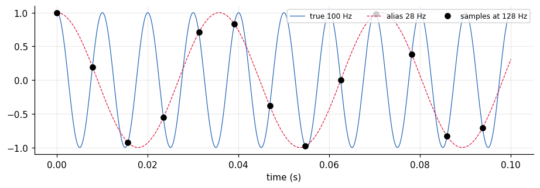
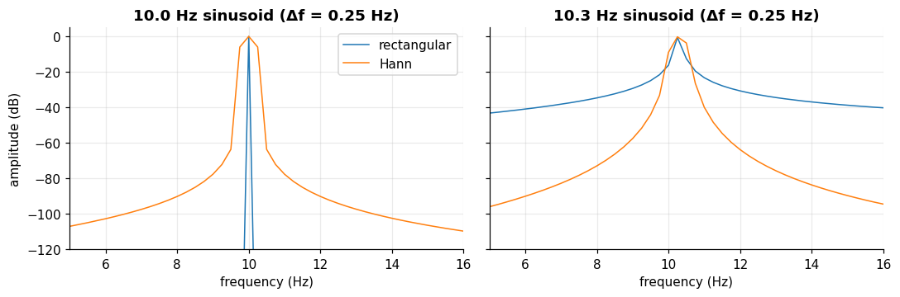
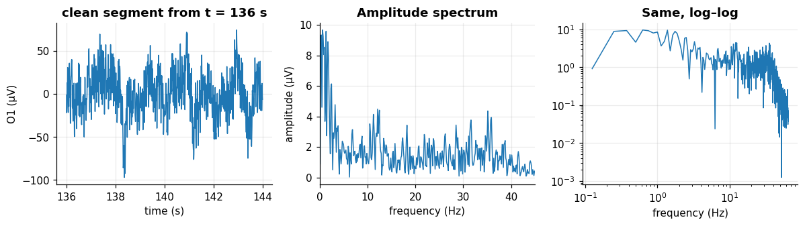
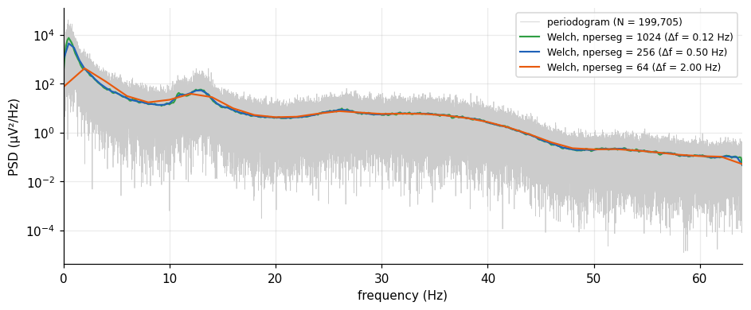

Sampling, aliasing and the Fourier transform#
Learning objectives
- State the sampling theorem and predict aliasing.
- Write the discrete Fourier transform (DFT), compute it with the FFT and interpret amplitude, frequency resolution and leakage.
- Use windows, and verify Parseval's theorem.
- Define the power spectral density and estimate it with Welch's method, linking variance reduction to what you know about averaging.
The brain's rhythms are oscillations, so we need to describe a signal by how much energy it has at each frequency. The Fourier transform does exactly this. But because our data are sampled, a few new rules appear.
Sampling and aliasing#
Sampling theorem (Nyquist–Shannon)
A signal containing no frequency above \(B\) can be perfectly reconstructed from samples taken at \(f_s > 2B\). Equivalently, only frequencies below the Nyquist frequency \(f_s/2\) can be represented. A component at frequency \(f > f_s/2\) is not lost: it is folded to the apparent frequency \[ f_{\mathrm{alias}} = \left| f - k f_s \right|, \qquad k=\mathrm{round}(f/f_s). \] This is aliasing, and it cannot be undone after sampling.
Example: a 100 Hz oscillation sampled at 128 Hz looks exactly like a 28 Hz one. The code below samples both and shows that the samples are identical.
fs_demo = 128
tc = np.linspace(0, 0.1, 5000) # "continuous" time (fine grid)
ts_ = np.arange(0, 0.1, 1 / fs_demo) # sampling instants
f_true = 100; f_alias = abs(f_true - round(f_true / fs_demo) * fs_demo)
fig, ax = plt.subplots(figsize=(10, 3))
ax.plot(tc, np.cos(2 * np.pi * f_true * tc), color="#1f62b8", lw=.8, label=f"true {f_true} Hz")
ax.plot(tc, np.cos(2 * np.pi * f_alias * tc), color="crimson", lw=.8, ls="--", label=f"alias {f_alias} Hz")
ax.plot(ts_, np.cos(2 * np.pi * f_true * ts_), "ko", label="samples at 128 Hz")
ax.set_xlabel("time (s)"); ax.legend(loc="upper right", fontsize=8, ncol=3); plt.show()
print("max difference between the two sampled signals:",
np.abs(np.cos(2 * np.pi * f_true * ts_) - np.cos(2 * np.pi * f_alias * ts_)).max())
max difference between the two sampled signals: 2.1094237467877974e-15

The two sets of samples are identical to machine precision. Try other values yourself in the widget below.
That is why the headset applies an anti-aliasing low-pass filter before decimating to 128 Hz: once the samples exist, aliased energy cannot be separated from the real one. It also explains the 43 Hz bandwidth of the device, comfortably below the 64 Hz Nyquist frequency.
The discrete Fourier transform#
Definition: DFT
For \(N\) samples \(x[n]\): \[ X[k]=\sum_{n=0}^{N-1} x[n]\,e^{-j2\pi kn/N}, \qquad k=0,\dots,N-1, \qquad f_k=k\,\frac{f_s}{N}. \] \(X[k]\) is a complex number: its modulus is the amplitude and its angle the phase of the sinusoid at frequency \(f_k\). The frequency resolution is \(\Delta f = f_s/N = 1/T\), where \(T\) is the duration of the segment.
The FFT is just a fast algorithm for the DFT (\(O(N\log N)\) instead of \(O(N^2)\)). We check this with the DFT matrix \(W_{kn}=e^{-j2\pi kn/N}\):
import time
N_ = 2048
rng_ = np.random.default_rng(1); xr = rng_.standard_normal(N_)
n_ = np.arange(N_); W = np.exp(-2j * np.pi * np.outer(n_, n_) / N_) # N x N DFT matrix
t0 = time.perf_counter(); X_mat = W @ xr; t_mat = time.perf_counter() - t0
t0 = time.perf_counter(); X_fft = np.fft.fft(xr); t_fft = time.perf_counter() - t0
print("same result:", np.allclose(X_mat, X_fft))
print(f"matrix DFT: {t_mat * 1e3:.1f} ms, FFT: {t_fft * 1e3:.2f} ms (about x{t_mat / t_fft:.0f} faster)")
same result: True matrix DFT: 6.2 ms, FFT: 0.12 ms (about x51 faster)
Frequency resolution, leakage and windows#
A segment of \(N\) samples is a rectangular window cut out of an infinite signal. Its transform is the true spectrum convolved with a sinc-shaped kernel. If the frequency fits an integer number of cycles in the window the line is clean; otherwise energy leaks into neighbouring bins. A tapered window (Hann) reduces the side lobes at the price of a wider main lobe.
fs_, N_ = 128, 512 # 4 s -> resolution 0.25 Hz
tt = np.arange(N_) / fs_
fig, ax = plt.subplots(1, 2, figsize=(10, 3.4), sharey=True)
for a, f0 in zip(ax, (10.0, 10.3)):
x_ = np.sin(2 * np.pi * f0 * tt)
for name, w in (("rectangular", np.ones(N_)), ("Hann", np.hanning(N_))):
A = np.abs(np.fft.rfft(x_ * w)) / w.sum() * 2
a.plot(np.fft.rfftfreq(N_, 1 / fs_), 20 * np.log10(A + 1e-12), label=name)
a.set_xlim(5, 16); a.set_ylim(-120, 5); a.set_xlabel("frequency (Hz)"); a.set_title(f"{f0} Hz sinusoid (Δf = {fs_ / N_} Hz)")
ax[0].set_ylabel("amplitude (dB)"); ax[0].legend(); plt.tight_layout(); plt.show()

At 10.0 Hz (40 whole cycles in 4 s) the rectangular window gives a perfect line; at 10.3 Hz it leaks widely, with side lobes decaying slowly. The Hann window keeps the leakage tiny in both cases. Rule: always apply a window (Hann is a good default) before the FFT of a real signal. Zero-padding makes the plot smoother but does not improve the true resolution, which is set by the duration \(T\) alone.
Explore a synthetic EEG#
Mix the five rhythms and watch how each appears as a line in the spectrum. Use a non-integer alpha frequency (such as 10.3 Hz) with the rectangular window to see leakage, then switch to the Hann window.
The spectrum of the real signal#
We now look for the first clean 8-second stretch of O1 and O2 (using the epoch mask of Chapter 4) and compute its amplitude spectrum with a Hann window.
ok = (ptp1[CH.index("o1")] < 150) & (ptp1[CH.index("o2")] < 150)
start = next(k for k in range(60, n_ep - 8) if ok[k:k + 8].all()) # first clean 8 s after t = 60 s
s0, s1 = start * FS, (start + 8) * FS
xs = X[CH.index("o1"), s0:s1]; xs = xs - xs.mean()
w = np.hanning(len(xs))
A = np.abs(np.fft.rfft(xs * w)) / w.sum() * 2 # amplitude (µV), corrected for the window gain
fq = np.fft.rfftfreq(len(xs), 1 / FS)
fig, ax = plt.subplots(1, 3, figsize=(11, 3.2))
ax[0].plot(np.arange(s0, s1) / FS, xs); ax[0].set_xlabel("time (s)"); ax[0].set_ylabel("O1 (µV)"); ax[0].set_title(f"clean segment from t = {start} s")
ax[1].plot(fq, A); ax[1].set_xlim(0, 45); ax[1].set_xlabel("frequency (Hz)"); ax[1].set_ylabel("amplitude (µV)"); ax[1].set_title("Amplitude spectrum")
ax[2].loglog(fq[1:], A[1:]); ax[2].set_xlabel("frequency (Hz)"); ax[2].set_title("Same, log–log")
plt.tight_layout(); plt.show()
# Parseval: energy in time = energy in frequency
Xf = np.fft.fft(xs)
print("sum x^2 =", round(float(np.sum(xs ** 2)), 1))
print("sum |X|^2 / N =", round(float(np.sum(np.abs(Xf) ** 2) / len(xs)), 1))
sum x^2 = 681303.3 sum |X|^2 / N = 681303.3

The linear plot is jagged, with a bump around 10–13 Hz; the log–log plot shows the typical \(1/f\) decay: power falls steadily with frequency. The last two lines illustrate Parseval's theorem, \(\sum_n |x[n]|^2=\frac1N\sum_k |X[k]|^2\): the FFT only redistributes energy, it neither creates nor destroys it.
Power spectral density and Welch's method#
Definition: Power spectral density (PSD)
The PSD describes how the average power of a signal is distributed over frequency, in \(\mu\mathrm{V}^2/\mathrm{Hz}\). The simplest estimate is the periodogram \(\hat S(f_k)=\frac{1}{f_sN}|X[k]|^2\) (with a factor 2 for one-sided spectra). Integrating the PSD over a band gives the power in that band.
The periodogram has a nasty property: its relative standard deviation is about 100% whatever the length of the recording. It is not a consistent estimator. We prove it with white noise:
rng_ = np.random.default_rng(0)
for N_w in (1000, 100_000):
xw = rng_.standard_normal(N_w)
f_, P_ = signal.periodogram(xw, fs=FS, window="boxcar")
P_ = P_[1:-1]
print(f"N = {N_w:>7}: relative std of the periodogram = {P_.std() / P_.mean():.2f} (true PSD is flat)")
N = 1000: relative std of the periodogram = 1.05 (true PSD is flat) N = 100000: relative std of the periodogram = 1.00 (true PSD is flat)
Using 100 times more data does not make the estimate smoother, it only gives more frequency bins that are just as noisy. Welch's method cuts the record into overlapping segments, windows each one, computes its periodogram and averages them. Averaging \(K\) roughly independent periodograms divides the variance by about \(K\) (the same \(1/K\) law as the standard error of a mean) at the price of a coarser resolution \(f_s/N_{\mathrm{seg}}\). It is a classic bias–variance trade-off.
x = X[CH.index("o1")]
fig, ax = plt.subplots(figsize=(10, 3.8))
f_p, P_p = signal.periodogram(x, fs=FS, window="hann")
ax.semilogy(f_p, P_p, color="#cccccc", lw=.5, label="periodogram (N = 199,705)")
for nseg, col in ((1024, "#2f9e44"), (256, "#1f62b8"), (64, "#e8590c")):
f_w, P_w = signal.welch(x, fs=FS, nperseg=nseg)
ax.semilogy(f_w, P_w, color=col, lw=1.4, label=f"Welch, nperseg = {nseg} (Δf = {FS / nseg:.2f} Hz)")
ax.set_xlim(0, 64); ax.set_xlabel("frequency (Hz)"); ax.set_ylabel("PSD (µV²/Hz)"); ax.legend(fontsize=8); plt.show()
# approximate 95% confidence interval for a Welch estimate with K segments (50% overlap): chi-square with ~2K d.o.f.
for nseg in (1024, 256, 64):
K = 2 * len(x) // nseg - 1; nu = 2 * K * 0.9 if K > 1 else 2
print(f"nperseg {nseg:5d}: K = {K:5d}, 95% CI of the PSD: x[{nu / stats.chi2.ppf(.975, nu):.2f}, {nu / stats.chi2.ppf(.025, nu):.2f}]")
nperseg 1024: K = 389, 95% CI of the PSD: x[0.90, 1.11] nperseg 256: K = 1559, 95% CI of the PSD: x[0.95, 1.05] nperseg 64: K = 6239, 95% CI of the PSD: x[0.97, 1.03]

The raw periodogram (grey) is a thick noisy cloud that spans about three decades at every frequency. All three Welch curves are smooth. Segments of 8 s (green, \(\Delta f=0.125\) Hz) and 2 s (blue, 0.5 Hz) are almost indistinguishable and resolve the bump at 10–13 Hz and the smaller one near 26 Hz; with 0.5-s segments (orange, 2 Hz) the curve is smoothest but the resolution is too coarse: the bump is smeared and the 26 Hz peak is lost. The printed factors give a rough 95% confidence interval as a multiplicative band around the estimate (for example ±5% with 2-s segments), which is why PSDs are plotted on a log axis. In the rest of the lab we use nperseg = 256 (2 s).
Self-check: A pure 100 Hz sinusoid is sampled at 128 Hz. At which frequency does it appear in the spectrum?
Exercise: Resolution and averaging
(a) What segment length is needed to separate 10 Hz and 10.5 Hz? (b) How many Welch segments (50% overlap) fit in the recording if each is 4 s long?
Show solution
(a) \(\Delta f = 1/T \le 0.5\) Hz, so \(T \ge 2\) s, i.e. at least 256 samples (in practice use 4 s or more because the Hann window widens the main lobe). (b) 4 s = 512 samples: \(K = 2\cdot 199{,}705/512 - 1 \approx 779\).